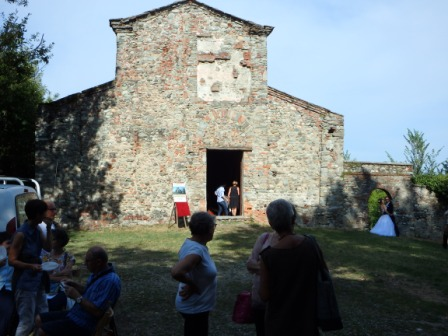
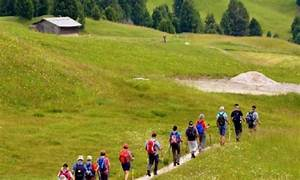
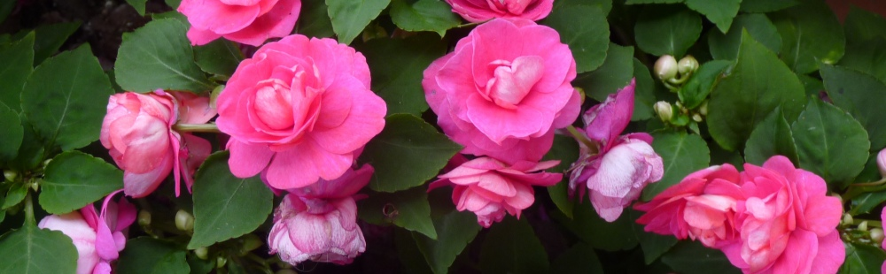
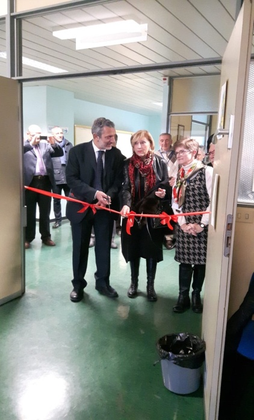
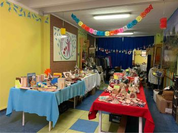
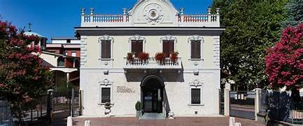

Motorio
Ginnastica dolce, Tai Chi, passeggiate e palestra riabilitativa per postura, equilibrio e forza.
Benessere a 360°
Le attività dell'Associazione Parkinsoniani del Canavese abbracciano ambiti diversi — motorio, cognitivo, emotivo e sociale — con un unico scopo: migliorare il benessere e l'autonomia dei malati di Parkinson e creare una rete di supporto intorno a loro.

Il nostro approccio
Ogni attività nasce dall'ascolto delle esigenze di malati e famiglie: movimento, mente, emozioni e relazioni si intrecciano per sostenere l'autonomia e la qualità della vita.
Ginnastica dolce, Tai Chi, passeggiate e palestra riabilitativa per postura, equilibrio e forza.
Laboratori, giochi e musicoterapia per allenare memoria, attenzione e creatività.
Yoga della risata, gruppi di ascolto e incontri con esperti per il benessere interiore.
Auto-mutuo aiuto, eventi e momenti di condivisione per non sentirsi mai soli.
Tutte le attività sono gratuite e aperte a malati, familiari e amici
Movimento e riabilitazione
Esercizio fisico adattato, seguito da volontari formati, per mantenere mobilità ed equilibrio in un ambiente accogliente e non competitivo.

GinnasticaGinnastica dolce e attività fisica adattata (AFA) in piccoli gruppi, corsi di Taijiquan e Qi Gong per postura, equilibrio e rilassamento.
 Palestra
Palestra
Palestra di Castellamonte con macchinari a movimento assistito per malati con difficoltà motorie importanti, seguiti dai volontari con attenzione e pazienza.

NaturaCamminate tradizionali o Nordic Walking nella natura canavesana, per unire esercizio fisico e socializzazione in un contesto rigenerante.

Benessere emotivo
Sessioni condotte da personale formato che combinano esercizi di risata indotta, respirazione consapevole e giochi di espressione. Un potente antistress naturale che unisce il gruppo in un clima di leggerezza e accoglienza.
Mente e creatività
Stimolare la mente attraverso il gioco, la musica e le arti manuali — in un ambiente sereno dove ognuno può esprimersi liberamente.

Laboratori con esercizi e giochi studiati per allenare memoria, attenzione e altre funzioni cognitive.

Corsi di musicoterapia e canto di gruppo per esprimere le emozioni e allenare la voce in un ambiente non giudicante.

Laboratori su richiesta (disegno, origami, lavori a maglia) per mantenere la manualità fine e divertirsi imparando.
Ascolto e condivisione
Spazi protetti dove condividere esperienze, ricevere orientamento e sentirsi compresi — per malati, familiari e caregiver.

Gruppi dove i partecipanti condividono liberamente esperienze, paure e conquiste quotidiane.
Neurologi, logopedisti, nutrizionisti e fisioterapisti rispondono alle domande dei presenti.
Incontri dedicati al benessere di malati e caregiver, a volte affiancati da psicologi.
Strategie di convivenza con la malattia e consigli per la gestione quotidiana.

Benessere alimentare
Incontri informativi sulla dieta e lo stile alimentare più adatti ai malati di Parkinson, con la presenza di dietisti o nutrizionisti qualificati che rispondono alle domande del gruppo.
Al tuo fianco
Oltre alle attività in sede, mettiamo a disposizione servizi concreti per facilitare la partecipazione e sostenere le famiglie nel percorso quotidiano.

Due autovetture attrezzate con autisti volontari per accompagnare i malati non automuniti alle attività.

Servizio di sollievo con convenzione per assistenti qualificati e percorsi formativi dedicati.

Aiuto per trovare assistenti qualificati nei momenti di necessità, permettendo riposo al caregiver.
Percorsi con consigli pratici su gestione quotidiana, movimentazione e comunicazione.
I nostri momenti
Ogni incontro è un'occasione per stare insieme, condividere e ritrovare energia e serenità.


Partecipa
Contattaci per maggiori informazioni o per iscriverti. Siamo pronti ad accoglierti con calore e ascolto — tutte le attività sono gratuite per gli associati.